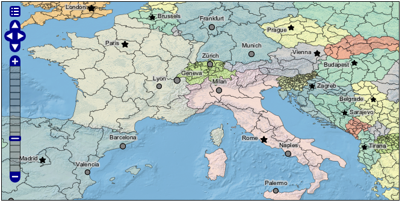
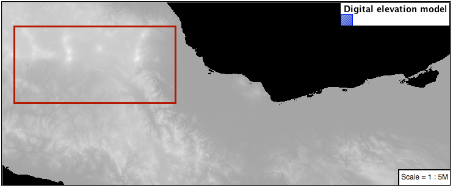
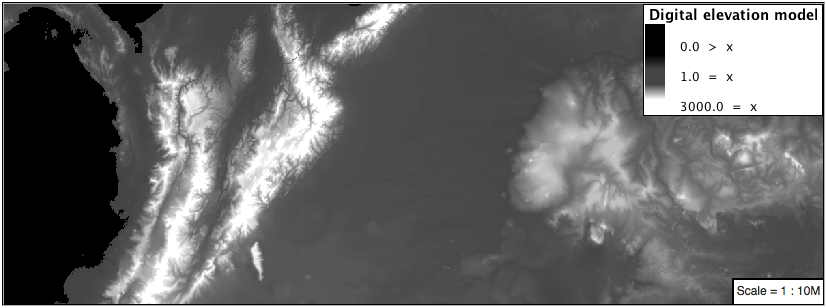

4.6. YSLD Workbook Conclusion¶
We hope you have enjoyed this styling workshop.
Additional resources:
4.6.1. YSLD Tips and Tricks¶
4.6.1.1. Converting to YSLD¶
The REST API can be used to convert any of your existing CSS or SLD styles to YSLD.
Navigate to the rest api endpoint for styles:
Note
Using
view-source:in chrome or firefox allows us to focus on page content.Click on one of the styles (for example
states.html)Click on the link to the style contents
Change the URL with ?pretty=true for human readable XML.
Change the URL with yaml to convert to YSLD.
The original SLD file is convert to YSLD:
name: states title: Population in the United States abstract: |- A sample filter that filters the United States into three categories of population, drawn in different colors feature-styles: - name: name rules: - name: Population < 2M title: Population < 2M filter: ${PERSONS < '2000000'} scale: [min, max] symbolizers: - polygon: fill-color: '#A6CEE3' fill-opacity: 0.7 - name: Population 2M-4M title: Population 2M-4M filter: ${PERSONS BETWEEN '2000000' AND '4000000'} scale: [min, max] symbolizers: - polygon: fill-color: F78B4 fill-opacity: 0.7 - name: '> 4M' title: Population > 4M filter: ${PERSONS > '4000000'} scale: [min, max] symbolizers: - polygon: fill-color: '#B2DF8A' fill-opacity: 0.7 - name: State Outlines title: State Outlines scale: [min, max] symbolizers: - line: stroke-color: '#8CADBF' stroke-width: 0.1 - name: State Abbreviations title: State Abbreviations scale: ['1.75E7', '3.5E7'] symbolizers: - text: label: ${STATE_ABBR} font-family: SansSerif font-size: 12 font-style: Normal font-weight: normal placement: point anchor: [0.5, 0.5] - name: State Names title: State Names scale: [min, '1.75E7'] symbolizers: - text: label: ${STATE_NAME} font-family: SansSerif font-size: 12 font-style: Normal font-weight: normal placement: point anchor: [0.5, 0.5] x-maxDisplacement: 100 x-goodnessOfFit: 0.9
4.6.2. YSLD Workshop Answer Key¶
The following questions were listed through out the workshop as an opportunity to explore the material in greater depth. Please do your best to consider the questions in detail prior to checking here for the answer. Questions are provided to teach valuable skills, such as a chance to understand how feature type styles are used to control z-order, or where to locate information in the user manual.
4.6.2.1. Classification¶
Answer for Challenge Classification:
Challenge: Create a new style adjust road appearance based on type.

Hint: The available values are ‘Major Highway’,’Secondary Highway’,’Road’ and ‘Unknown’.
Here is an example:
define: &common stroke-opacity: 0.25 rules: - filter: ${type = 'Major Highway'} symbolizers: - line: stroke-color: '#000088' stroke-width: 1.25 <<: *common - filter: ${type = 'Secondary Highway'} symbolizers: - line: stroke-color: '#8888AA' stroke-width: 0.75 <<: *common - filter: ${type = 'Road'} symbolizers: - line: stroke-color: '#888888' stroke-width: 0.75 <<: *common - filter: ${type = 'Unknown'} symbolizers: - line: stroke-color: '#888888' stroke-width: 0.5 <<: *common - else: true symbolizers: - line: stroke-color: '#AAAAAA' stroke-width: 0.5 <<: *common
4.6.2.2. One Rule Classification¶
Answer for Challenge One Rule Classification:
Challenge: Create a new style and classify the roads based on their scale rank using expressions in a single rule instead of multiple rules with filters.
This exercise requires looking up information in the user guide, the search tearm recode provides several examples.
The YSLD Reference theming functions provides a clear example.
4.6.2.3. Label Shields¶
Answer for Challenge Label Shields:
Challenge: Have a look at the documentation for putting a graphic on a text symbolizer in SLD and reproduce this technique in YSLD.

The use of a label shield is a vendor specific capability of the GeoServer rendering engine. The tricky part of this exercise is finding the documentation online ( i.e. TextSymbolizer - Graphic).
symbolizers: - line: stroke-color: '#000000' stroke-width: 3 - line: stroke-color: '#D3D3D3' stroke-width: 2 - text: label: ${name} fill-color: '#000000' font-family: Ariel font-size: 10 font-style: normal font-weight: normal placement: point graphic: size: 18 symbols: - mark: shape: square stroke-color: '#000000' stroke-width: 1 fill-color: '#FFFFFF'
4.6.2.4. Antialiasing¶
Answer for Explore Antialiasing:
When we rendered our initial preview, without a stroke, thin white gaps (or slivers) are visible between our polygons.

This effect is made more pronounced by the rendering engine making use of the Java 2D sub-pixel accuracy. This technique is primarily used to prevent an aliased (stair-stepped) appearance on diagonal lines.
Explore: Experiment with fill and stroke settings to eliminate slivers between polygons.
The obvious approach works - setting both values to the same color:
symbolizers: - polygon: stroke-color: 'lightgrey' stroke-width: 1 fill-color: 'lightgrey'
4.6.2.5. Categorize¶
Answer for Explore Categorize:
An exciting use of the GeoServer shape symbols is the theming by changing the size used for pattern density.
Explore: Use the Categorize function to theme by datarank.

Example:
symbolizers: - polygon: stroke-color: 'black' stroke-width: 1 fill-color: 'gray' fill-graphic: size: ${Categorize(datarank,'4','4','5','6','8','10','10')} symbols: - mark: shape: shape://slash stroke-color: 'darkgray' stroke-width: 1
4.6.2.6. Halo¶
Answer for Challenge Halo:
The halo example used the fill color and opacity for a muted halo, while this improved readability it did not bring attention to our labels.
A common design choice for emphasis is to outline the text in a contrasting color.
Challenge: Produce a map that uses a white halo around black text.
Here is an example:
symbolizers: - polygon: stroke-color: 'gray' stroke-width: 1 fill-color: '#7EB5D3' - text: label: ${name} fill-color: 'black' halo: fill-color: 'white' radius: 1 font-family: Arial font-size: 14 font-style: normal font-weight: normal anchor: [0.5, 0.5]
4.6.2.7. Theming using Multiple Attributes¶
Answer for Challenge Theming using Multiple Attributes:
A powerful tool is theming using multiple attributes. This is an important concept allowing map readers to perform “integration by eyeball” (detecting correlations between attribute values information).
Challenge: Combine the mapcolor9 and datarank examples to reproduce the following map.

This should be a cut and paste using the
recodeexample, andcategorizeexamples already provided.symbolizers: - polygon: stroke-color: 'black' stroke-width: 1 fill-color: ${Recode(mapcolor9, '1','#8dd3c7', '2','#ffffb3', '3','#bebada', '4','#fb8072', '5','#80b1d3', '6','#fdb462', '7','#b3de69', '8','#fccde5', '9','#d9d9d9')} - polygon: stroke-color: 'black' stroke-width: 1 fill-color: 'gray' fill-graphic: size: ${Categorize(datarank,'6','4','8','6','10','10','12')} symbols: - mark: shape: shape://slash stroke-color: 'black' stroke-width: 1 fill-color: 'gray'
4.6.2.8. Use of Feature styles¶
Answer for Challenge Use of Feature styles:
Using multiple feature-styles to simulate line string casing. The resulting effect is similar to text halos - providing breathing space around complex line work allowing it to stand out.
Challenge: Use what you know of LineString feature-styles to reproduce the following map:

This is much easier when using YSLD, where z-order is controlled by feature-style order. In this instance, multiple symbolizers within a feature-style will not work, as the order within a feature-style is only consistent per-feature (not per-layer).
feature-styles: - rules: - symbolizers: - polygon: stroke-width: 1.0 fill-color: 'lightgrey' - rules: - symbolizers: - polygon: stroke-width: 1.0 fill-color: 'gray' fill-graphic: size: 8 symbols: - mark: shape: shape://slash stroke-color: 'black' stroke-width: 0.75 - rules: - symbolizers: - line: stroke-color: 'lightgrey' stroke-width: 6 - rules: - symbolizers: - line: stroke-color: 'black' stroke-width: 1.5
The structure of the legend graphic provides an indication on what is going on.
4.6.2.9. Geometry Location¶
Answer for Challenge Geometry Location:
The mark property can be used to render any geometry content.
Challenge: Try this yourself by rendering a polygon layer using a mark property.
This can be done one of two ways:
Changing the association of a polygon layer, such as
ne:states_provinces_shpto point_example and using the layer preview page.Changing the Layer Preview tab to a polygon layer, such as
ne:states_provinces_shp.
The important thing to notice is that the centroid of each polygon is used as a point location.
4.6.2.10. Dynamic Symbolization¶
Answer for Explore Dynamic Symbolization:
SLD Mark and ExternalGraphic provide an opportunity for dynamic symbolization.
This is accomplished by embedding a small CQL expression in the string passed to symbol or url. This sub-expression is isolated with ${ } as shown:
- point: symbols: - mark: shape: ${if_then_else(equalTo(FEATURECLA,'Admin-0 capital'),'star','circle')}
Challenge: Use this approach to rewrite the Dynamic Styling example.
Example available here
point_example.css:
4.6.2.11. Layer Group¶
Answer for Challenge Layer Group:
Use a Layer Group to explore how symbology works together to form a map.
ne:NE1
ne:states_provincces_shp
ne:populated_places
This background is relatively busy and care must be taken to ensure both symbols and labels are clearly visible.
Challenge: Do your best to style populated_places over this busy background.
Here is an example with labels for inspiration:
This is opportunity to revisit label halo settings from Polygons:
symbolizers: - point: size: ${'5' + '10' - SCALERANK / '3'} symbols: - mark: shape: circle stroke-color: 'white' stroke-width: 1 stroke-opacity: 0.75 fill-color: 'black' x-labelObstacle: true - text: label: ${name} fill-color: 'black' font-family: Arial font-size: 14 anchor: [0.5, 1] offset: [0 ${'-12' + SCALERANK}] halo: fill-color: `lightgray` radius: 2 opacity: 0.7 priority: ${`0` - LABELRANK} x-maxDisplacement: 90Using a lightgray halo, 0.7 opacity and radius 2 fades out the complexity immediately surrounding the label text improving legibility.
4.6.2.12. Contrast Enhancement¶
Discussion for Explore Contrast Enhancement:
A special effect that is effective with grayscale information is automatic contrast adjustment.
Make use of a simple contrast enhancement with
usgs:dem:symbolizers: - raster: opacity: 1.0 contrast-enhancement: mode: normalize
Can you explain what happens when zoom in to only show a land area (as indicated with the bounding box below)?
What happens is insanity, normalize stretches the palette of the output image to use the full dynamic range. As long as we have ocean on the screen (with value 0) the land area was shown with roughly the same presentation.
Once we zoom in to show only a land area, the lowest point on the screen (say 100) becomes the new black, radically altering what is displayed on the screen.
4.6.2.13. Intervals¶
Answer for Challenge Intervals:
The color-map type property dictates how the values are used to generate a resulting color.
ramp is used for quantitative data, providing a smooth interpolation between the provided color values.
intervals provides categorization for quantitative data, assigning each range of values a solid color.
values is used for qualitative data, each value is required to have a color-map entry or it will not be displayed.
Chalenge: Update your DEM example to use intervals for presentation. What are the advantages of using this approach for elevation data?
By using intervals it becomes very clear how relatively flat most of the continent is. The ramp presentation provided lots of fascinating detail which distracted from this fact.
Here is style for you to cut and paste:
symbolizers: - raster: opacity: 1.0 color-map: type: intervals entries: - ['#014636', 0, 0, null] - ['#014636', 1.0, 1, null] - ['#016C59', 1.0, 500, null] - ['#02818A', 1.0, 1000, null] - ['#3690C0', 1.0, 1500, null] - ['#67A9CF', 1.0, 2000, null] - ['#A6BDDB', 1.0, 2500, null] - ['#D0D1E6', 1.0, 3000, null] - ['#ECE2F0', 1.0, 3500, null] - ['#FFF7FB', 1.0, 4000, null]
4.6.2.14. Clear Digital Elevation Model Presentation¶
Answer for Challenge Clear Digital Elevation Model Presentation:
Now that you have seen the data on screen and have a better understanding how would you modify our initial gray-scale example?
Challenge: Use what you have learned to present the
usgs:demclearly.The original was a dark mess. Consider making use of mid-tones (or adopting a sequential palette from color brewer) in order to fix this. In the following example the ocean has been left dark, allowing the mountains stand out more.
symbolizers: - raster: opacity: 1.0 color-map: type: ramp entries: - ['#000000', 1.0, 0, null] - ['#444444', 1.0, 1, null] - ['#FFFFFF', 1.0, 3000, null]
4.6.2.15. Raster Opacity¶
Discussion for Challenge Clear Digital Elevation Model Presentation:
There is a quick way to make raster data transparent, raster opacity property works in the same fashion as with vector data. The raster as a whole will be drawn partially transparent allow content from other layers to provide context.
Challenge: Can you think of an example where this would be useful?
This is difficult as raster data is usually provided for use as a basemap, with layers being drawn over top.
The most obvious example here is the display of weather systems, or model output such as fire danger. By drawing the raster with some transparency, the landmass can be shown for context.